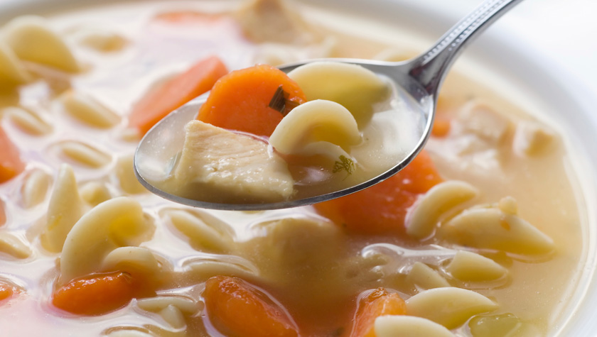

A time-tested basic recipe that’s great for the cold weather or whenever the comfort food mood strikes. Swap in whatever pasta you prefer like elbow macaroni, egg noodles or alphabet noodles. Need a little greenery? Add some spinach, kale or even some snow peas. Make it your own!
Heat a large heavy bottomed pot on medium heat. Season chicken with salt, pepper, garlic and onion powders. Add 1 tablespoon of olive oil, or enough to coat the bottom of the pot. Add chicken pieces the pot and brown on both sides. Once chicken has browned, remove from the pot and set aside. It’s ok if the chicken isn’t cooked through at this point. It will continue cooking in the soup.
Add a little more oil to the pot if needed and add shallots, cooking till translucent. Add garlic and cook for 1 minute. Add carrots and celery and cook until tender (about 5 minutes). Add the browned chicken back to the pot. Pour in 2 boxes of chicken stock and add thyme sprigs. Bring to a boil and then reduce to a simmer.
Let simmer for 30 minutes on medium-low heat. Stir in Ditalini pasta and cook for another 15 minutes or until pasta is al dente. Discard thyme springs before serving.
For questions about this recipe, please contact us.
For more recipes please visit allrecipes.com.